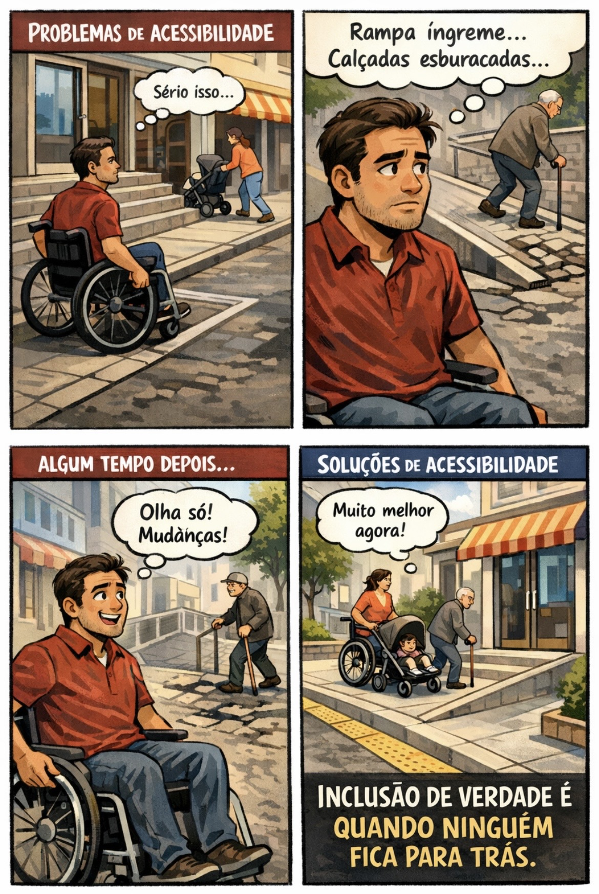

Moblidade e iclusão: Acessibilidade aos cadeirantes
pomevendo ruas e espaços urbanos mais acessíveis,garantindo autonomia e dignidade para os cadeirantes
A mobilidade com inclusão e acessibilidade para cadeirantes é essencial para garantir o direito de ir e vir de
todas as pessoas com dignidade e autonomia.
Isso envolve a adaptação de espaços públicos e privados com rampas, elevadores, calçadas adequadas e transportes
acessíveis, além de promover uma cultura de respeito e empatia na sociedade.
Quando a acessibilidade é priorizada, não apenas os cadeirantes se beneficiam, mas toda população, tornando os
ambientes mais justos, seguros e inclusivos para todos.
<
A acessibilidade para cadeirantes é um direito fundamental e deve estar presente em todos os espaços,
públicos e privados. Isso envolve a adaptação de calçadas, a instalação de rampas, elevadores acessíveis e portas
mais largas, além de sinalizações adequadas. Quando esses recursos são bem planejados, permitem que pessoas que
utilizam cadeira de rodas tenham mais autonomia e consigam se locomover com segurança e dignidade no dia a dia.
Além da estrutura física, é essencial promover a conscientização da sociedade sobre a importância da inclusão.
Atitudes simples, como respeitar vagas exclusivas, não obstruir rampas e oferecer ajuda quando necessário, fazem
grande diferença. A mobilidade inclusiva depende tanto de políticas públicas quanto do comportamento coletivo,
garantindo que todos tenham igualdade de acesso aos espaços e oportunidades.
